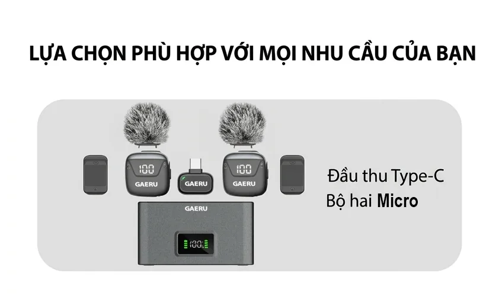
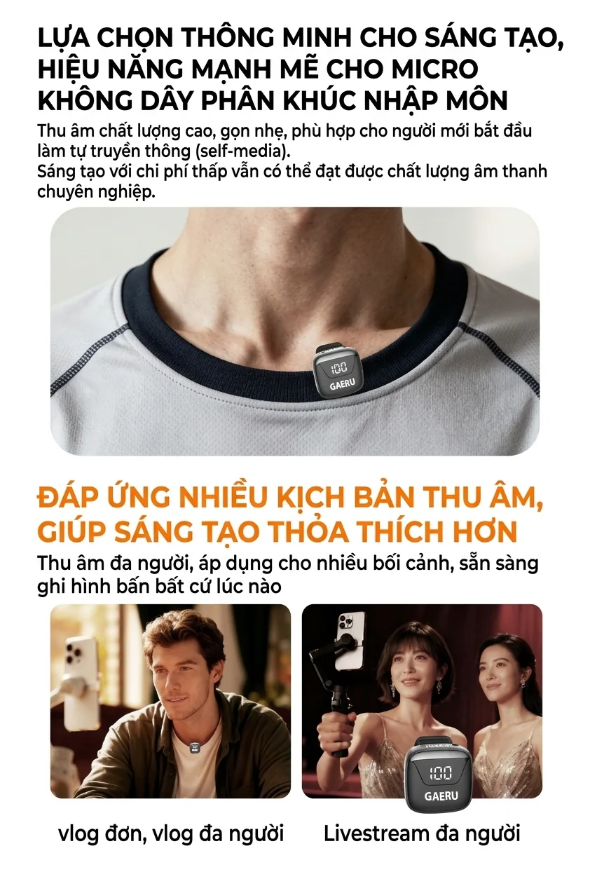
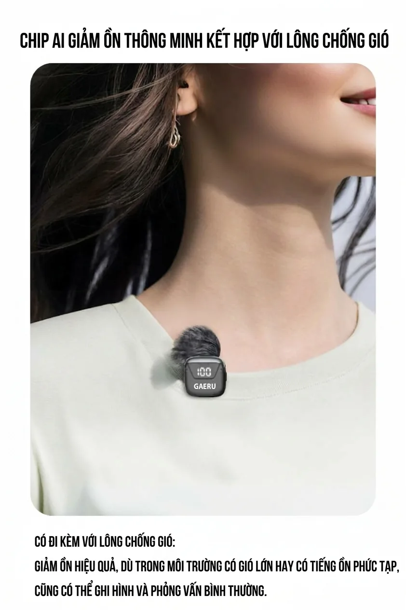
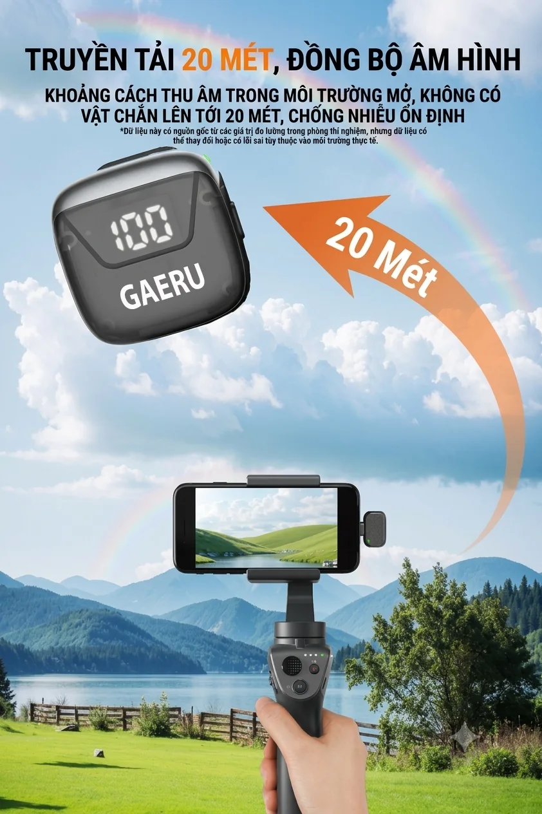
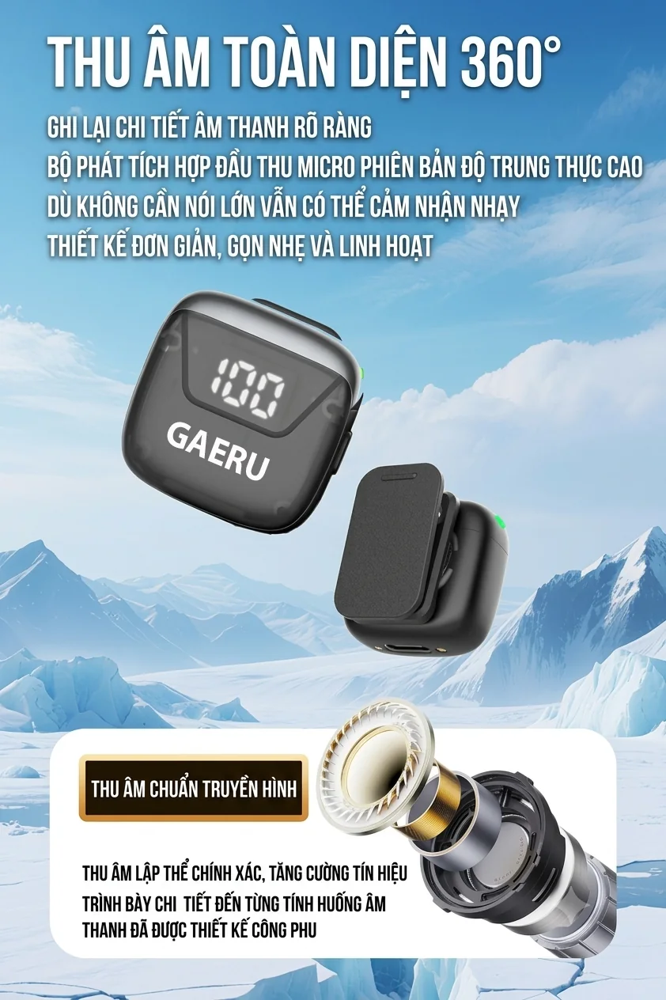
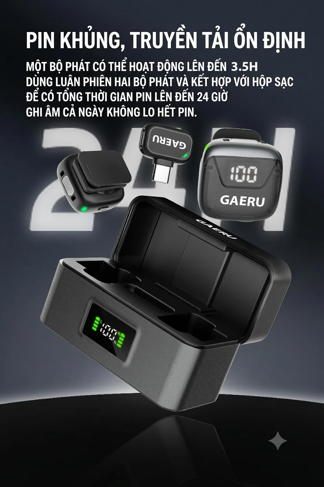
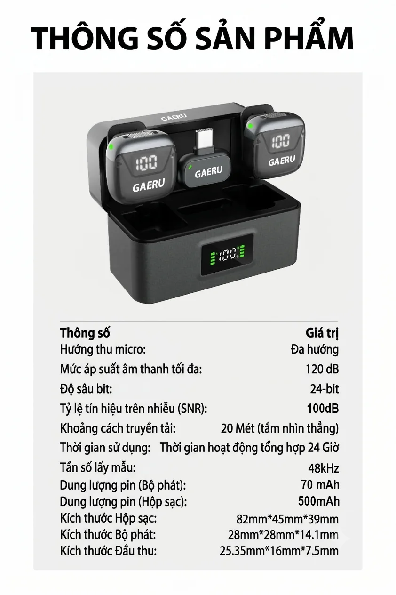

Hai người cùng kể chuyện
Một đầu thu hỗ trợ đồng thời hai bộ phát. Thu âm đa hướng 360° phù hợp cho vlog, phỏng vấn đối thoại và buổi livestream hai người.
GAERU M3 · MICRO KHÔNG DÂY CÓ HỘP SẠC
Từ vlog đầu tiên đến cuộc trò chuyện hai người. Hai micro nhỏ gọn cùng hộp sạc hiển thị pin trực quan, sẵn sàng đồng hành cùng bạn mỗi ngày.

NHỎ GỌN ĐỂ BẮT ĐẦU
Thiết kế tập trung vào sự gọn gàng khi chuẩn bị: lấy micro khỏi hộp sạc, gắn đầu thu vào thiết bị và kiểm tra tín hiệu trước khi ghi hình.
Một đầu thu hỗ trợ đồng thời hai bộ phát. Thu âm đa hướng 360° phù hợp cho vlog, phỏng vấn đối thoại và buổi livestream hai người.
Kết hợp xử lý giảm ồn thông minh cùng bông lọc gió đi kèm để giữ giọng nói rõ ràng hơn. Hiệu quả thực tế phụ thuộc mức ồn và vị trí gắn micro.
Màn hình LED hiển thị trực tiếp mức pin của hộp sạc và trạng thái thiết bị, giúp bạn chủ động kiểm tra năng lượng trước mỗi buổi quay.
Cất giữ và nạp lại năng lượng cho cả hai micro ngay trong hộp. Hỗ trợ đầu thu Type-C tiêu chuẩn cùng các tùy chọn đầu chuyển theo phiên bản.

GAERU TRONG CUỘC SỐNG CỦA BẠN
Cài micro lên cổ áo cách miệng khoảng 10–20 cm, thu thử một đoạn ngắn và nghe lại trước khi bấm máy. Từ video cá nhân đến buổi trò chuyện, phần chuẩn bị luôn gọn nhẹ.
Di chuyển tự nhiên trước ống kính mà không vướng dây cáp, giữ mức âm giọng nói ổn định khi đổi góc đứng.
Luân phiên hai bộ phát cùng hộp sạc để duy trì âm thanh xuyên suốt các phiên chia sẻ hoặc bán hàng trực tuyến.
Mỗi người đeo một bộ phát riêng, thu đồng thời vào một đầu thu duy nhất trên điện thoại hoặc máy tính.
ÂM THANH THEO BẠN
Thu âm 24-bit / 48 kHz kết hợp điều chỉnh độ lợi và giới hạn âm lượng tự động (SPL tối đa 120 dB). Khoảng cách truyền lên đến 20 m trong không gian mở, tầm nhìn thẳng không vật cản; kết quả thực tế tùy môi trường sử dụng.



SẴN SÀNG CHO BUỔI QUAY TIẾP THEO
Một bộ phát hoạt động liên tục lên đến 3,5 giờ. Khi luân phiên hai bộ phát và kết hợp hộp sạc, tổng thời lượng sử dụng đạt lên đến 24 giờ tùy điều kiện vận hành thực tế.

CHI TIẾT THIẾT BỊ
| Hướng thu | Đa hướng 360° |
|---|---|
| Độ sâu bit / Tần số lấy mẫu | 24-bit / 48 kHz |
| Áp suất âm thanh tối đa (SPL) | 120 dB |
| Tỷ lệ tín hiệu trên nhiễu (SNR) | 100 dB |
| Khoảng cách truyền | Lên đến 20 m (môi trường mở, không vật cản) |
| Thời lượng pin | Lên đến 3,5 giờ / 1 mic · Lên đến 24 giờ khi luân phiên 2 mic cùng hộp sạc |
| Dung lượng pin bộ phát / hộp sạc | 70 mAh / 500 mAh |
| Kích thước (Hộp sạc / Mic / Đầu thu) | 82 × 45 × 39 mm · 28 × 28 × 14,1 mm · 25,35 × 16 × 7,5 mm |

Xem đầy đủ phiên bản và đặt mua tại trang sản phẩm GAERU M3 ›
GIẢI ĐÁP NHANH
Có. Đầu thu hỗ trợ nhận tín hiệu đồng thời từ cả hai bộ phát. Bạn nên bật và thu thử từng micro trong ứng dụng dự định sử dụng trước khi bắt đầu buổi quay chính.
Bộ cơ bản sử dụng đầu thu Type-C. Tại trang sản phẩm có các tùy chọn kèm đầu chuyển Lightning, USB-A hoặc Micro USB. Hãy kiểm tra cổng kết nối và khả năng nhận micro ngoài (USB Audio / OTG) của thiết bị trước khi đặt hàng.
Một bộ phát hoạt động liên tục lên đến 3,5 giờ. Con số 24 giờ là tổng thời lượng khi bạn luân phiên sử dụng hai bộ phát và sạc lại nhiều lần qua hộp sạc đi kèm.
Khoảng cách lên đến 20 m đạt được trong không gian mở, tầm nhìn thẳng giữa bộ phát và đầu thu, không có vật cản. Tường chắn, cơ thể người hoặc nhiễu sóng không dây có thể làm giảm phạm vi thực tế.
CÂU CHUYỆN TIẾP THEO BẮT ĐẦU TỪ BẠN